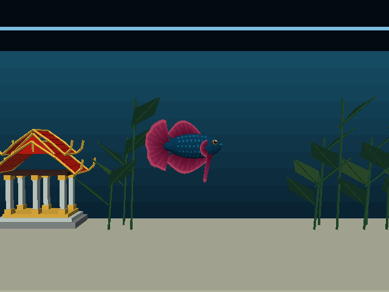
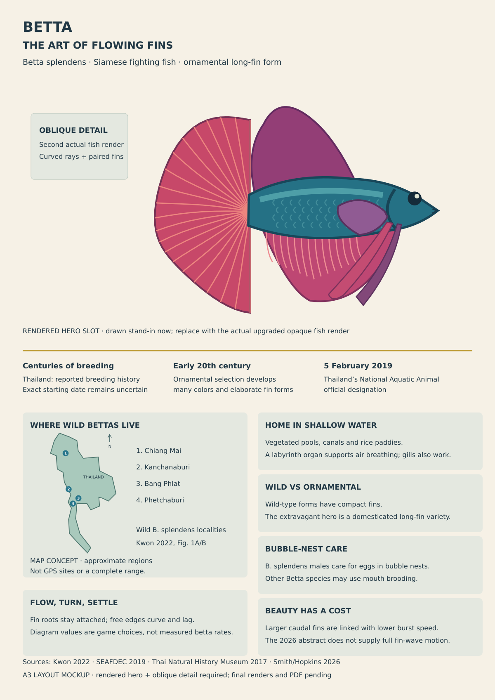
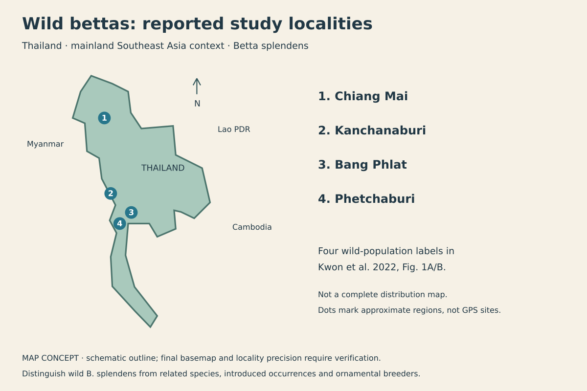
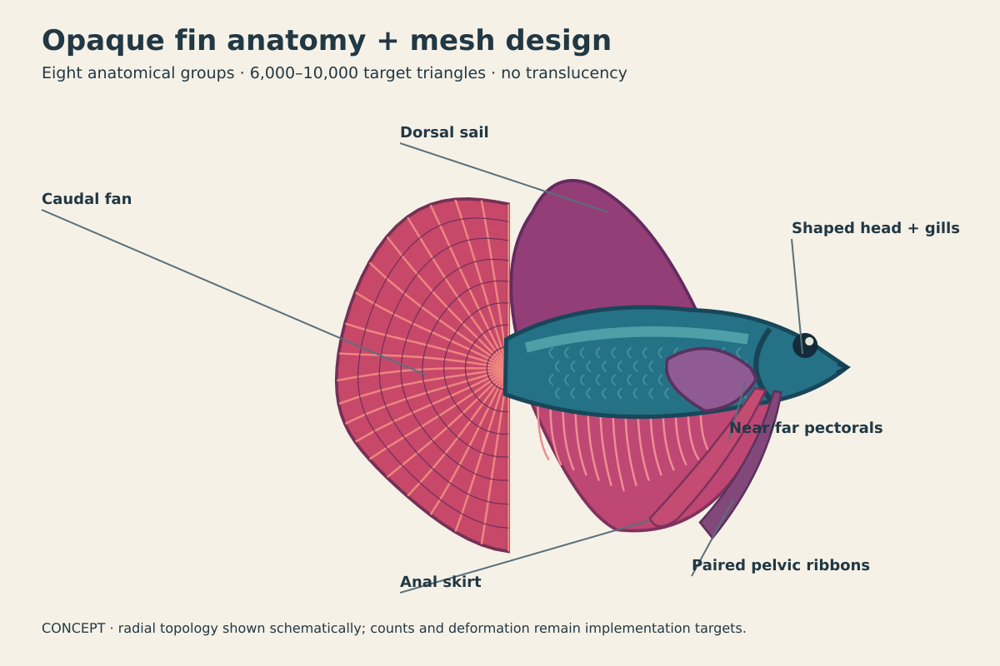
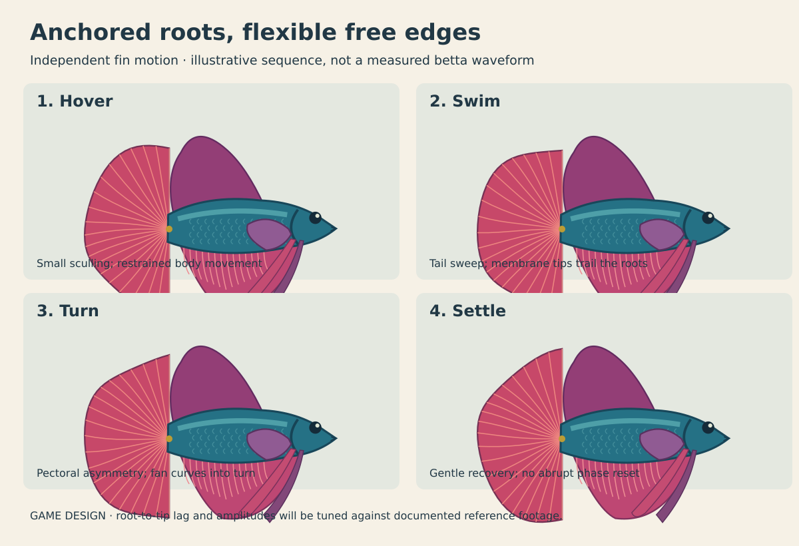

Betta: poster + ornate flowing fins
A3 poster with actual runtime geometry · Print PDF. The concepts below remain earlier design studies; the runtime upgrade is implemented.
Actual engine motion

4,076 triangles, eight visual groups, seven flexible fins. Measurements and device receipts are linked from the plan.
Original design mockups and diagrams. These are not engine captures, a finished poster, or measured motion. Every planned fin uses opaque geometry; no translucency dependency.
A3 poster layout

Wild-fish locations
Four locality names checked in Kwon et al. 2022, Fig. 1. Approximate regions on a schematic outline; the finished poster uses a geographic basemap with explicitly approximate regional points. This is not a complete range map.

Detailed opaque mesh

Flowing-fin motion
